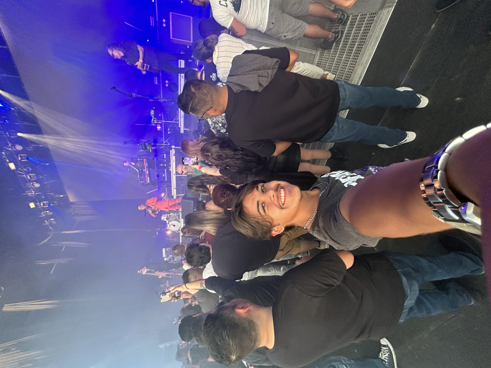
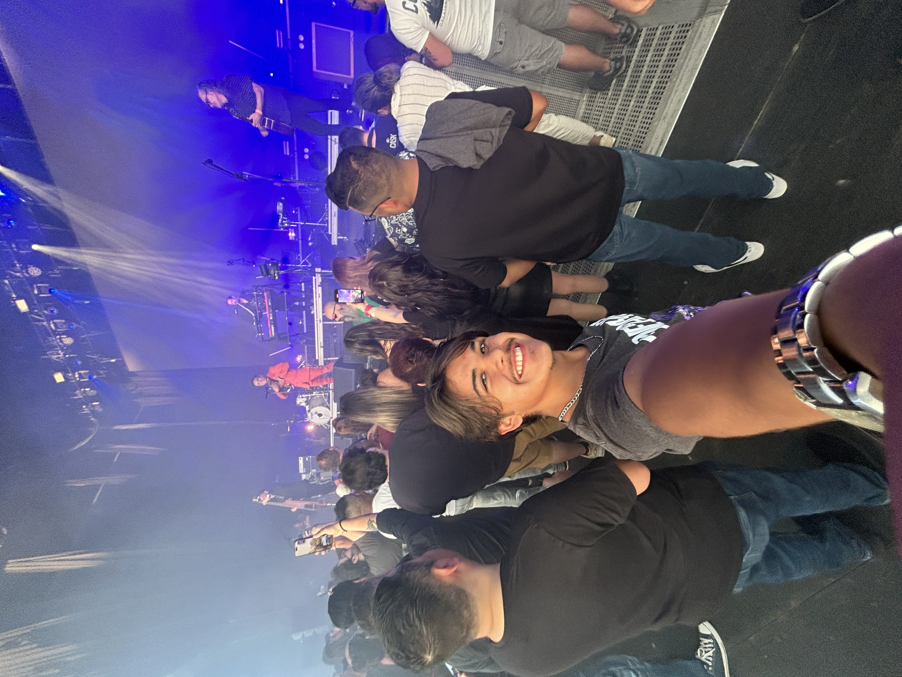

About Me

Hello! My name is Raul Pulido. I am an undergraduate at the Cockrell School of Engineering at the University of Texas at Austin. I'm currently enrolled in a course on web development and learning to build amazing websites. I'm passionate about creating clean and user-friendly websites and learning new technologies. This portfolio showcases the projects I've built during my journey into web development.
 
